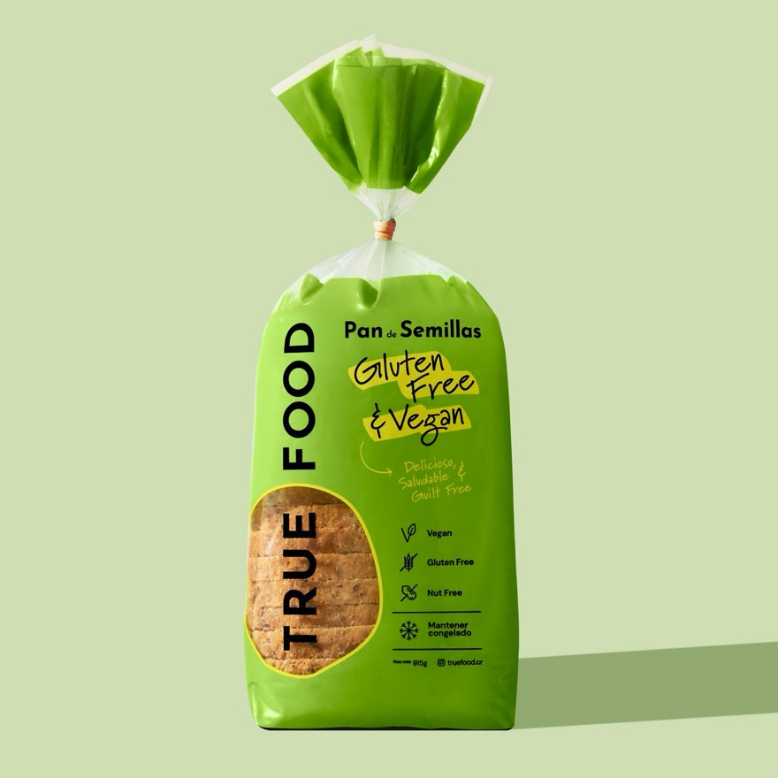
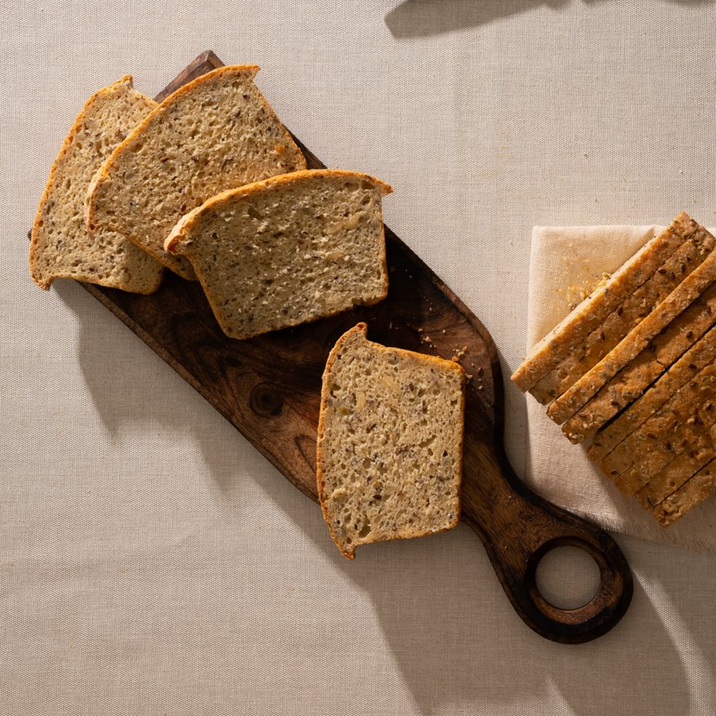

Pan de Semillas
Vegano y nutritivo, con girasol, calabaza y linaza.
- Vegano
- Congelado

El producto
Pan cuadrado rebanado, con semillas de girasol, calabaza y linaza. El único de la línea que es vegano.
Ingredientes
Harina de avena, harina de arroz, harina de garbanzo, almidón de maíz, almidón de yuca, sal, azúcar cruda, levadura, goma xantana. Semillas de girasol, semillas de calabaza, semillas de linaza.
La harina de avena que usamos es certificada libre de gluten.
Libre de gluten, lácteos y nueces.

Ficha técnica
| Forma | Pan cuadrado · rebanado |
|---|---|
| Presentación | Bolsa suelta |
| Peso neto | 915 g |
| Conservación | Congelado a −18 °C |
| Vida útil | 6 meses |
| Caja máster | 6 unidades |
| Dimensiones de caja | 30 × 24 × 23 cm |
| Registro sanitario | RE-CR-22-08653 |
| Código de barra productoGTIN 13 | 7443036920011 |
Certificado gluten free por Gluten-Free Food Program · 5 ppm | Kosher Parve | HACCP